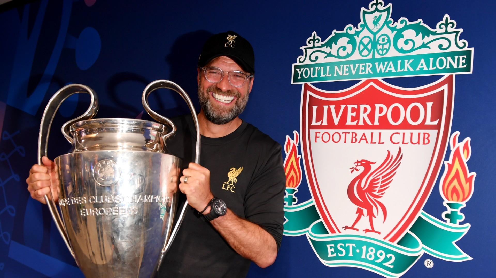

Champions League:
 Widely considered the most competitive club competition in the world, the Champions League is composed of only the best of the best clubs in Europe. Liverpool earned their bid into this year's competition by finishing third in the Premier League last season (2023/2024). The Champions League is experiencing a new, unfamiliar format this season, but regardless, Liverpool still maintains a perfect record in the competition (5-0-0), and sit at the top of the table with a two point gap.
Want to attend a game at Liverpool's world famous stadium, Anfield? Here is how you get there: